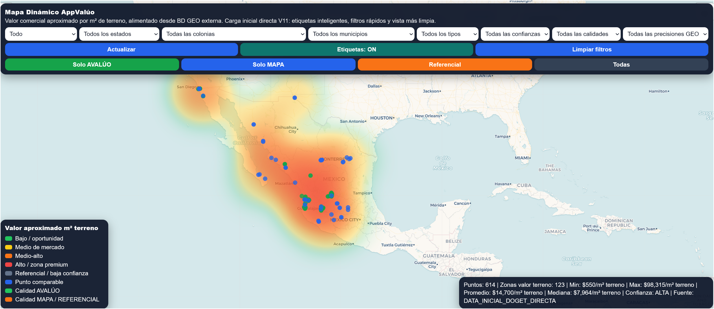

Capas visuales
Ubicación
Relaciona cada referencia con el territorio donde ocurre.
módulo de análisis geográfico
Una vista operativa para ubicar referencias, ordenar señales y entender el entorno antes de tomar una decisión valuatoria.
Abrir el mapa dinámicoUbicación
Relaciona cada referencia con el territorio donde ocurre.
Criterio
Acota la lectura por estado, colonia, municipio, tipo y calidad.
Decisión
Convierte una lectura visual en respaldo para tu expediente.
vista operativa
El mapa permite reconocer patrones que no siempre aparecen en una tabla: concentración de referencias, proximidad, zonas de oportunidad y diferencias de valor.

cómo se maneja
La interfaz está pensada para que el valuador pueda pasar de una vista amplia a una revisión puntual sin perder el contexto.
Comienza con el territorio completo y localiza el expediente dentro de su entorno.
Combina estado, colonia, municipio, tipo, confianza, calidad y precisión GEO para depurar la lectura.
Identifica rápidamente los puntos comparables y distingue referencias de avalúo, mapa o referencial.
Revisa rangos y concentraciones de valor para sostener una conclusión más transparente.
qué aporta al expediente
Entiende la relación entre el inmueble, sus referencias y las zonas que influyen en la opinión de valor.
Separa señales útiles de referencias de menor confianza para enfocar el análisis.
Explica con mayor claridad de dónde surge el criterio y qué entorno fue considerado.
siguiente paso
La información completa se consulta dentro de AppValúo, donde el mapa forma parte del flujo de trabajo del expediente.